Scalars
The first of the rendering shapes measured here, rendered on the same machine with the same engines as the rest: a layout, an included partial, a loop over scalars with a filter, and a nested loop inside it. These are this page's own figures — a time here and a time further down are not the same measurement, so compare engines WITHIN a page rather than across pages.
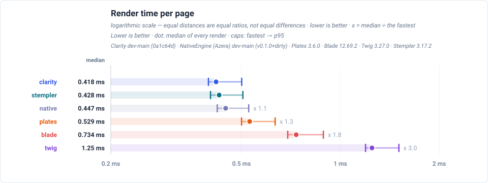
Lower is better. Span: fastest observation → p95; dot: median of every render.
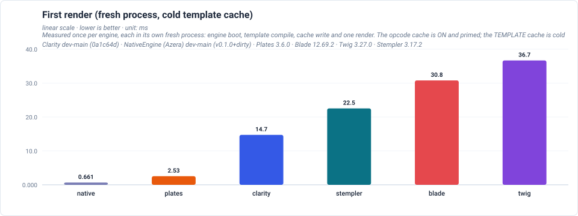
The one-off cost the first request pays.
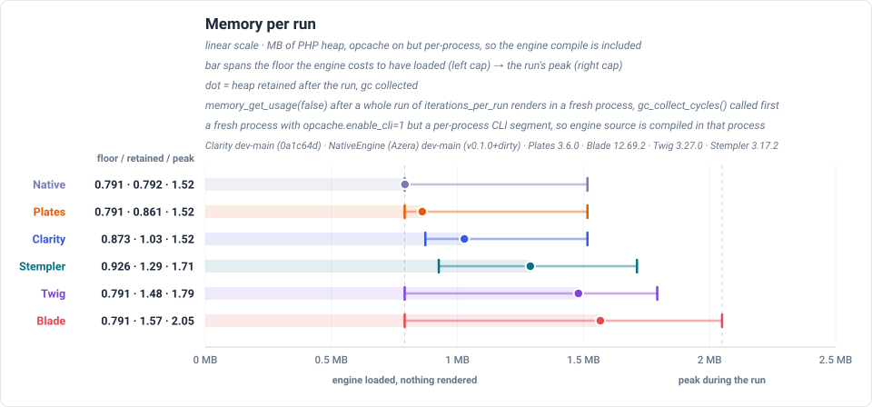
Range: the engine loaded with nothing rendered → the run's peak. Dot: heap retained after the run.
Results
| Engine | First render (ms) | Mean (ms) | Median (ms) | Min (ms) | p95 (ms) | Retained (MB) | Peak (MB) |
|---|---|---|---|---|---|---|---|
| Clarity | 14.726 | 0.432 | 0.418 | 0.397 | 0.501 | 1.03 | 1.52 |
| Stempler | 22.536 | 0.440 | 0.428 | 0.402 | 0.505 | 1.29 | 1.71 |
| Native | 0.661 | 0.460 | 0.447 | 0.422 | 0.526 | 0.79 | 1.52 |
| Plates | 2.532 | 0.547 | 0.529 | 0.500 | 0.633 | 0.86 | 1.52 |
| Blade | 30.786 | 0.760 | 0.734 | 0.692 | 0.888 | 1.57 | 2.05 |
| Twig | 36.686 | 1.289 | 1.248 | 1.193 | 1.507 | 1.48 | 1.79 |
Memory is the peak PHP heap for one render, measured in a fresh process so each engine reports its own footprint rather than the high-water mark of everything measured before it.
Mixed
Measured on the same machine with the same engines, rendering the heavy page: 20 flat variables each read twice (as text and as a data-value attribute) plus 20 rows of six fields each, over 40 flat variable accesses per render and 1440 in total at 200 items, with every value HTML-special so the escape path does real work in both the body and an attribute context. A figure here and a figure above are different measurements — compare engines within a page, not across pages.
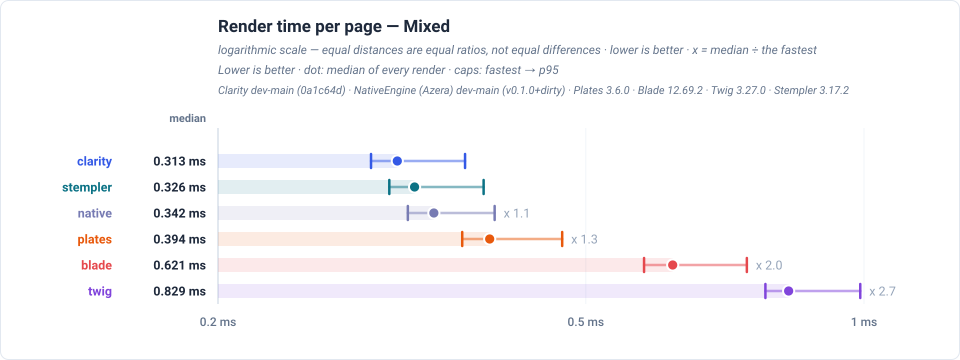
Lower is better. Span: fastest observation → p95; dot: median of every render.
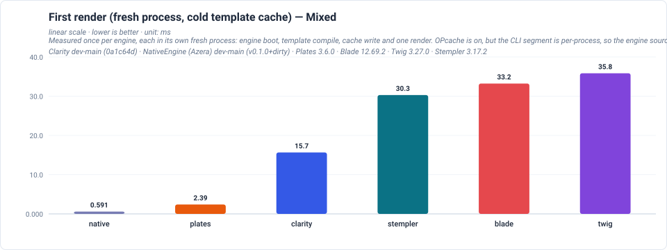
The one-off cost the first request pays.
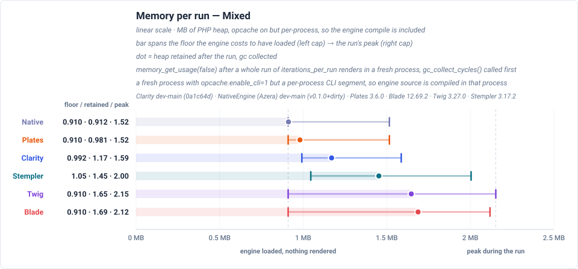
Range: the engine loaded with nothing rendered → the run's peak. Dot: heap retained after the run.
Results
| Engine | First render (ms) | Mean (ms) | Median (ms) | Min (ms) | p95 (ms) | Retained (MB) | Peak (MB) |
|---|---|---|---|---|---|---|---|
| Clarity | 15.653 | 0.322 | 0.313 | 0.293 | 0.370 | 1.17 | 1.59 |
| Stempler | 30.288 | 0.337 | 0.326 | 0.306 | 0.388 | 1.45 | 2.00 |
| Native | 0.591 | 0.353 | 0.342 | 0.321 | 0.398 | 0.91 | 1.52 |
| Plates | 2.392 | 0.406 | 0.394 | 0.368 | 0.471 | 0.98 | 1.52 |
| Blade | 33.222 | 0.639 | 0.621 | 0.578 | 0.747 | 1.69 | 2.12 |
| Twig | 35.839 | 0.854 | 0.829 | 0.782 | 0.991 | 1.65 | 2.15 |
Objects
Measured on the same machine with the same engines, rendering objects instead of scalars: two properties, a nested object, a nullable property behind a default, and an array inside an object. A figure here and a figure above are different measurements — compare engines within a page, not across pages.
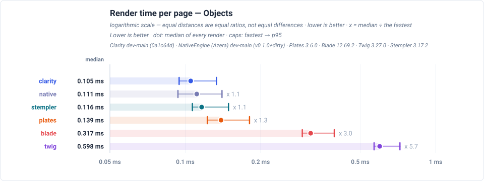
Lower is better. Span: fastest observation → p95; dot: median of every render.
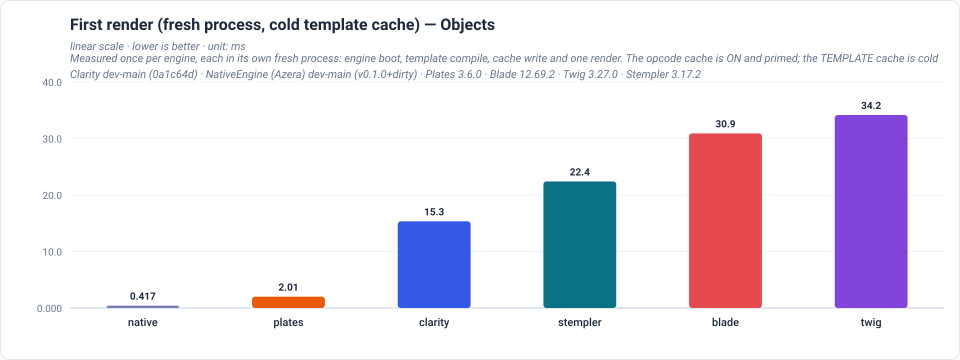
The one-off cost the first request pays.
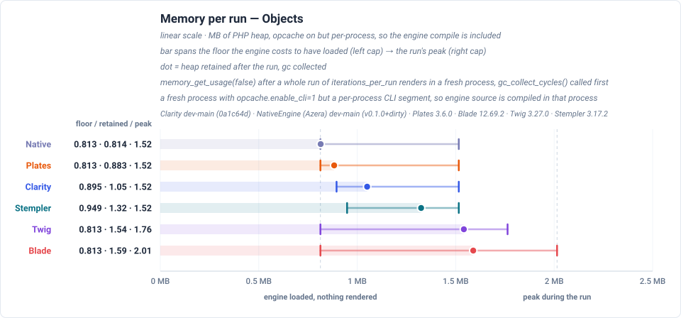
Range: the engine loaded with nothing rendered → the run's peak. Dot: heap retained after the run.
Results
| Engine | First render (ms) | Mean (ms) | Median (ms) | Min (ms) | p95 (ms) | Retained (MB) | Peak (MB) |
|---|---|---|---|---|---|---|---|
| Clarity | 15.339 | 0.111 | 0.105 | 0.095 | 0.133 | 1.05 | 1.52 |
| Native | 0.417 | 0.117 | 0.111 | 0.093 | 0.140 | 0.81 | 1.52 |
| Stempler | 22.398 | 0.123 | 0.116 | 0.107 | 0.149 | 1.32 | 1.52 |
| Plates | 2.010 | 0.148 | 0.139 | 0.122 | 0.181 | 0.88 | 1.52 |
| Blade | 30.908 | 0.329 | 0.317 | 0.293 | 0.394 | 1.59 | 2.01 |
| Twig | 34.159 | 0.619 | 0.598 | 0.568 | 0.720 | 1.54 | 1.76 |
Objects as arrays
Measured on the same machine with the same engines, rendering the same content in the same order with the same values held as nested arrays, so access shape is the only difference. A figure here and a figure above are different measurements — compare engines within a page, not across pages.
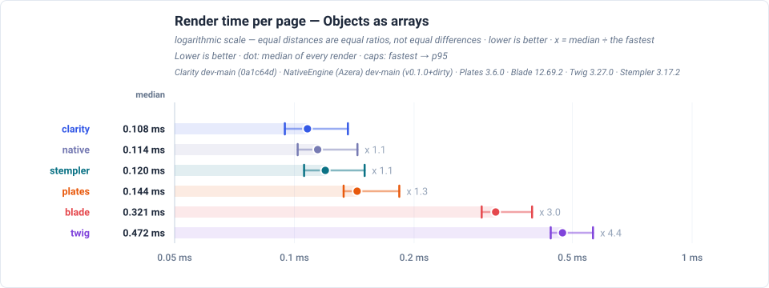
Lower is better. Span: fastest observation → p95; dot: median of every render.
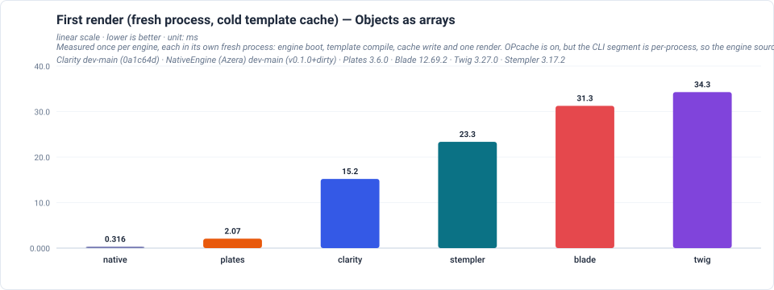
The one-off cost the first request pays.
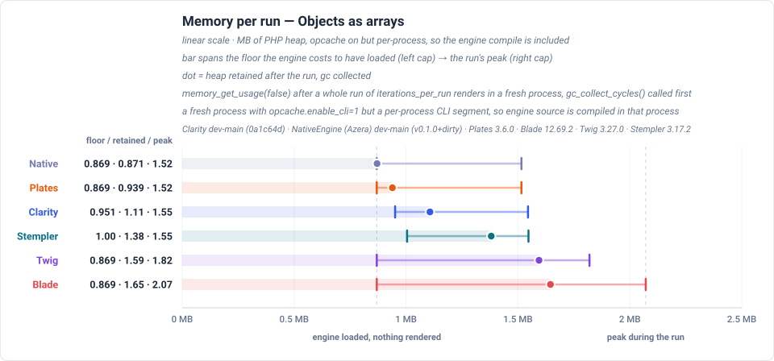
Range: the engine loaded with nothing rendered → the run's peak. Dot: heap retained after the run.
Results
| Engine | First render (ms) | Mean (ms) | Median (ms) | Min (ms) | p95 (ms) | Retained (MB) | Peak (MB) |
|---|---|---|---|---|---|---|---|
| Clarity | 15.202 | 0.113 | 0.108 | 0.095 | 0.136 | 1.11 | 1.55 |
| Native | 0.316 | 0.121 | 0.114 | 0.102 | 0.144 | 0.87 | 1.52 |
| Stempler | 23.347 | 0.126 | 0.120 | 0.106 | 0.150 | 1.38 | 1.55 |
| Plates | 2.072 | 0.152 | 0.144 | 0.133 | 0.184 | 0.94 | 1.52 |
| Blade | 31.259 | 0.332 | 0.321 | 0.296 | 0.396 | 1.65 | 2.07 |
| Twig | 34.280 | 0.488 | 0.472 | 0.441 | 0.563 | 1.59 | 1.82 |